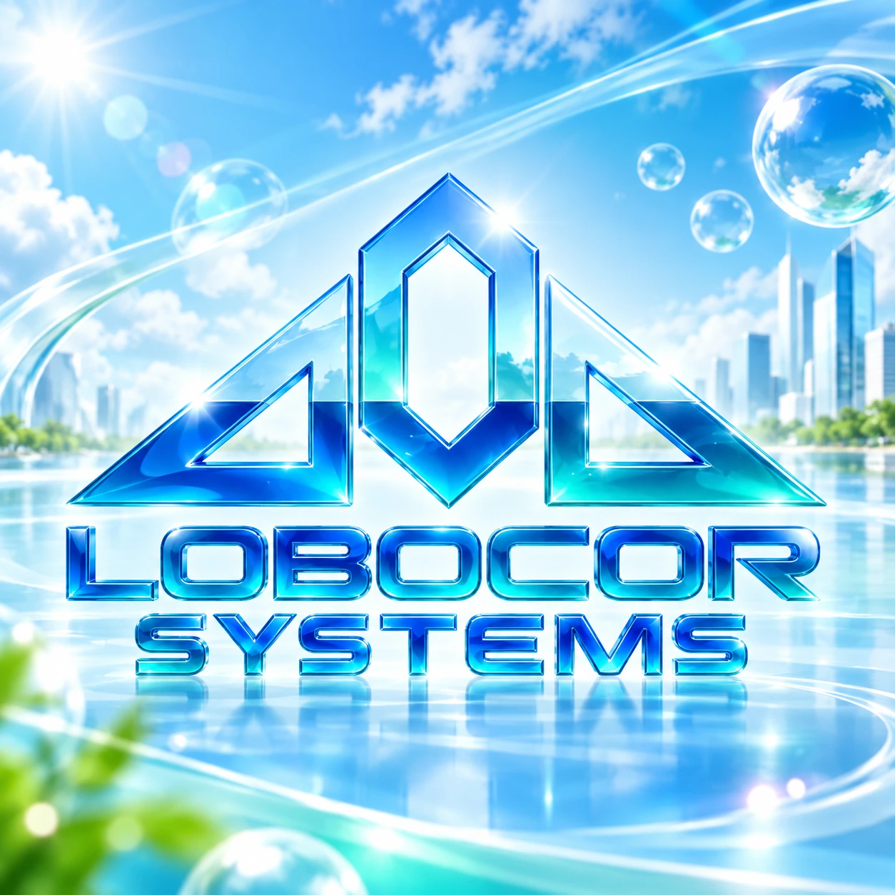

TABLETOP RPGRELEASED
Dunes ⁊ Demons: Imaginary Edition
A complete frontier-fantasy RPG of black powder, occult bargains and the worlds beneath Vinlandia.
Published by LoboCor Systems
Games, software engineering, reverse engineering and digital preservation — brought together under one independent creative label.

THREE WORLDS. ONE STUDIO.
From complete original worlds to tools that push existing systems further.
THE PORTFOLIO
Eight publicly listed itch.io projects, working prototypes and longer-term technical research. Every project is marked by its current stage.
A complete frontier-fantasy RPG of black powder, occult bargains and the worlds beneath Vinlandia.
A standalone junior edition with compact rules, eleven ready heroes and the Spire of the Behemoth.
Survive dangerous roads, capture esperitz and explore a procedural world under old-school class restrictions.
Tactical poker-driven RPG combat in which cards form your party and each winning hand changes the battle.
Fast chess-inspired tactical fantasy with six classes, streamlined stats and procedural adventures.
Classic tabletop-inspired Dungeonlocke rules for Pokémon playthroughs.
An independently made Pokémon-themed tabletop roguelike and dungeon-crawler.
Alternative Nuzlocke challenges and rules for Pokémon games.
Turn an Android tablet into a touch-enabled Windows display through a custom multi-touch bridge.
An independent PS5-oriented library, archive and loader project focused on compatibility, reliability and usability.
A homebrew achievement system for Nintendo 3DS, exploring game-specific milestones and a shared achievement profile.
Technical research into the architecture, prototypes and restoration of a classic PlayStation game.
A growing collection of restoration concepts and independent studies of older games.
Unofficial research is independent of original publishers and platform holders. No copyrighted game assets or proprietary binaries are offered here.
MEET LOBOCOR SYSTEMS
We work where original game design meets technical curiosity: building our own experiences, writing useful software, and investigating how the games and machines we grew up with actually work.
Our published games live on itch.io. Public code, tools and research belong on GitHub as they become ready to share.